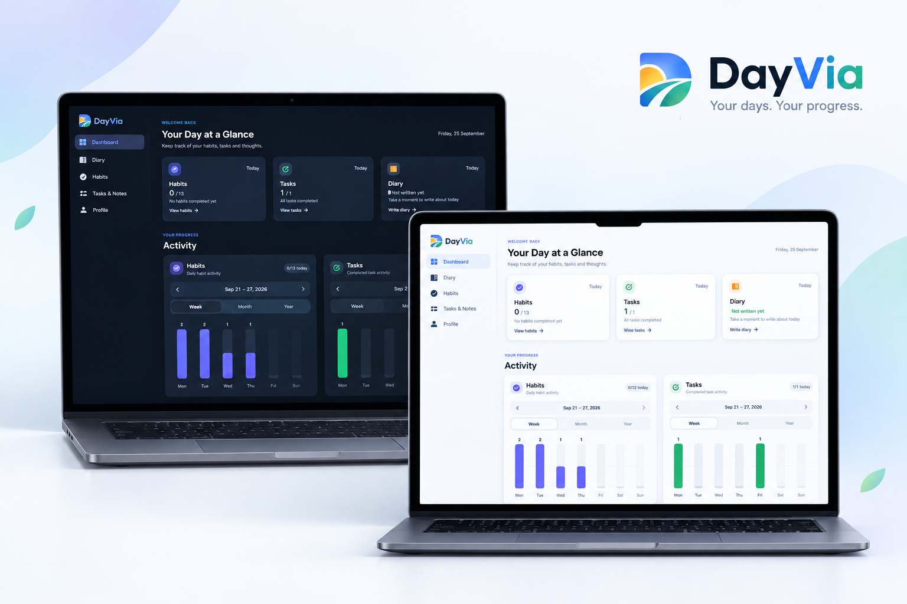

Build your habits
Create routines that matter to you and keep track of how consistently you're following them.
DayVia brings your habits, tasks, diary and progress into one simple space — helping you build routines, stay on track and understand your days better.
From the habits you're building to the things you need to get done — DayVia keeps your everyday life visible without making it complicated.

DayVia combines the pieces of your everyday routine into a single personal workspace.
Create routines that matter to you and keep track of how consistently you're following them.
Keep today's tasks visible, organise priorities and plan ahead without losing sight of what matters.
Write about your day, capture thoughts and revisit moments that would otherwise disappear.
Visualise your activity across weeks, months and years instead of relying on memory alone.
Personalise your experience with your profile, statistics and light or dark themes.
DayVia is designed around progress, not perfection. Missed a day? Pick it back up and keep going.
DayVia turns your everyday activity into simple, understandable visualisations. Look at today, zoom out to a month or step back and see the year.
Use DayVia on the web or install the Android app and keep your routines with you wherever you go.